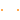

Interfaces
Extends from Modelica.Icons.InterfacesPackage (Icon for packages containing interfaces).
| Name | Description |
|---|---|
| Quasi-static magnetic port of fundamental wave machines | |
| PositiveMagneticPort | Positive quasi-static magnetic port of fundamental wave machines |
| NegativeMagneticPort | Negative quasi-static magnetic port of fundamental wave machines |
|  TwoPortElementary | Partial two port for graphical programming |
| TwoPortExtended | Partial two port for graphical programming with additional variables |
| TwoPort | Elementary partial two port for textual programming |
Quasi-static magnetic port of fundamental wave machines
Base definition of complex quasi-static magnetic port. The potential variable is the complex magnetic potential
V_m and the flow variable is the complex magnetic flux Phi.
PositiveMagneticPort, NegativeMagneticPort
| Name | Description |
|---|---|
| V_m | Complex magnetic potential at the port |
| Phi | Complex magnetic flux flowing into the port |
Positive quasi-static magnetic port of fundamental wave machines
The positive port is based on MagneticPort. Additionally the reference angle is specified in the connector. The time derivative of the reference angle is the actual angular velocity of the quasi-static voltage and current. The symbol is also designed such way to look different than the NegativeMagneticPort.
MagneticPort, NegativeMagneticPort
Extends from FundamentalWave.Interfaces.MagneticPort (Quasi-static magnetic port of fundamental wave machines).
| Name | Description |
|---|---|
| V_m | Complex magnetic potential at the port |
| Phi | Complex magnetic flux flowing into the port |
| reference | Reference |
Negative quasi-static magnetic port of fundamental wave machines
The negative pin is based on Pin. Additionally the reference angle is specified in the connector. The time derivative of the reference angle is the actual angular velocity of the quasi-static voltage and current. The symbol is also designed such way to look different than the positive pin.
MagneticPort, PositiveMagneticPort
Extends from FundamentalWave.Interfaces.MagneticPort (Quasi-static magnetic port of fundamental wave machines).
| Name | Description |
|---|---|
| V_m | Complex magnetic potential at the port |
| Phi | Complex magnetic flux flowing into the port |
| reference | Reference |
Partial two port for graphical programming
The partial two port model consists of a positive and a negative magnetic port. The reference angles of the two ports are set equal and connected through Connections.branch.
| Name | Description |
|---|---|
| port_p | Positive quasi-static magnetic port of fundamental wave machines |
| port_n | Negative quasi-static magnetic port of fundamental wave machines |
Partial two port for graphical programming with additional variables
The partial two port model consists of a positive and a negative magnetic port. The reference angles of the two ports are set equal and connected through Connections.branch.
This interface model contains an extended set of (output) variables compared to TwoPortElementary.
Extends from Magnetic.QuasiStatic.FundamentalWave.Interfaces.TwoPortElementary (Partial two port for graphical programming).
| Name | Description |
|---|---|
| port_p | Positive quasi-static magnetic port of fundamental wave machines |
| port_n | Negative quasi-static magnetic port of fundamental wave machines |
Elementary partial two port for textual programming
The partial two port elementary model extends from the partial two port model and adds one equation considering the balance of flow variables, port_p.Phi + port_n.Phi = Complex(0,0). Additionally, a variable for magnetic potential difference of the two magnetic ports, V_m, and the flux into the positive port, Phi, are defined.
Extends from Magnetic.QuasiStatic.FundamentalWave.Interfaces.TwoPortExtended (Partial two port for graphical programming with additional variables).
| Name | Description |
|---|---|
| port_p | Positive quasi-static magnetic port of fundamental wave machines |
| port_n | Negative quasi-static magnetic port of fundamental wave machines |